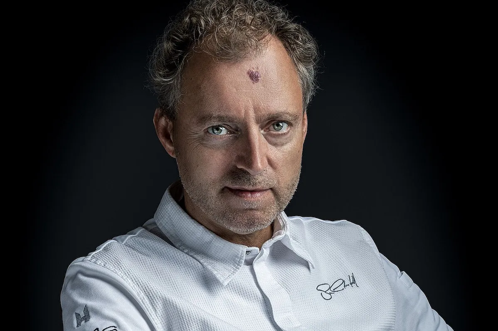
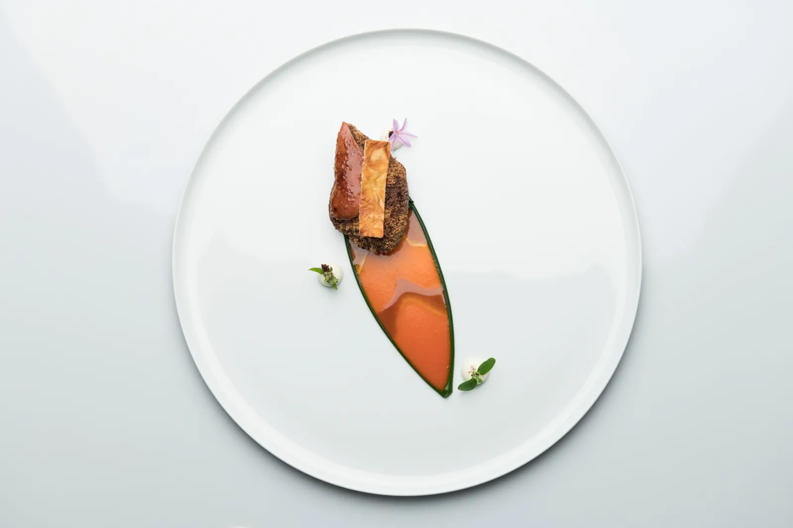
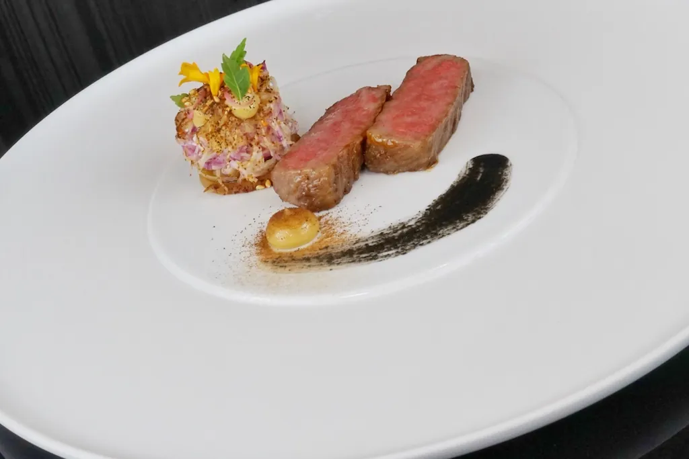
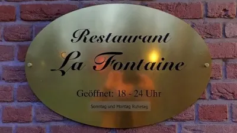

<style>
  :root {
    --paper: #f0eadb;
    --paper-edge: #e6dec9;
    --ink: #15110d;
    --ink-soft: #3a322a;
    --ink-faint: #6b6258;
    --rule: #1a1612;
    --ox: #7a1f1f;
    --gold: #8a6c1e;
  }
  .obit {
    background: var(--paper);
    color: var(--ink);
    font-family: "EB Garamond", "Garamond", "Hoefler Text", Georgia, serif;
    font-size: 18px;
    line-height: 1.55;
    padding: 28px 36px 80px;
    max-width: 1180px;
    margin: 0 auto;
    background-image:
      radial-gradient(rgba(0,0,0,0.025) 1px, transparent 1px),
      radial-gradient(rgba(0,0,0,0.018) 1px, transparent 1px);
    background-size: 3px 3px, 5px 5px;
    background-position: 0 0, 1px 2px;
  }
  @import url("https://fonts.googleapis.com/css2?family=Playfair+Display:ital,wght@0,400;0,700;0,900;1,400;1,700&family=EB+Garamond:ital,wght@0,400;0,500;0,600;1,400;1,500&family=Old+Standard+TT:ital,wght@0,400;0,700;1,400&family=Inter:wght@400;500;600&display=swap");

  .obit a { color: inherit; text-decoration: underline; text-decoration-thickness: 0.5px; text-underline-offset: 2px; text-decoration-color: rgba(21,17,13,0.35); }
  .obit a:hover { text-decoration-color: var(--ox); color: var(--ox); }
  .obit sup a { text-decoration: none; color: var(--ox); }
  .obit sup { font-size: 0.62em; vertical-align: super; line-height: 0; padding-left: 1px; }

  /* MASTHEAD */
  .mast-top {
    display: flex;
    justify-content: space-between;
    align-items: center;
    border-top: 2px solid var(--rule);
    border-bottom: 1px solid var(--rule);
    padding: 6px 0;
    font-family: "Inter", sans-serif;
    font-size: 10.5px;
    letter-spacing: 0.18em;
    text-transform: uppercase;
    color: var(--ink-soft);
  }
  .mast-top span:nth-child(2) { letter-spacing: 0.32em; }

  .mast-name {
    text-align: center;
    padding: 30px 0 8px;
  }
  .mast-name h1 {
    font-family: "Old Standard TT", "Playfair Display", serif;
    font-weight: 700;
    font-size: clamp(56px, 9vw, 112px);
    letter-spacing: 0.04em;
    margin: 0;
    line-height: 0.95;
  }
  .mast-name .deck {
    font-family: "EB Garamond", serif;
    font-style: italic;
    font-size: 16px;
    color: var(--ink-soft);
    margin-top: 8px;
    letter-spacing: 0.02em;
  }
  .mast-section {
    display: flex;
    align-items: center;
    justify-content: space-between;
    border-top: 4px solid var(--rule);
    border-bottom: 1px solid var(--rule);
    padding: 8px 0;
    margin-top: 14px;
    font-family: "Inter", sans-serif;
    font-size: 11px;
    letter-spacing: 0.32em;
    text-transform: uppercase;
  }
  .mast-section .label { font-weight: 600; }
  .mast-section .stars { font-family: serif; letter-spacing: 0.4em; color: var(--gold); }

  /* HEADLINE BLOCK */
  .headline-block {
    padding: 36px 0 24px;
    text-align: center;
    border-bottom: 1px solid var(--rule);
  }
  .kicker {
    font-family: "Inter", sans-serif;
    font-size: 11px;
    letter-spacing: 0.32em;
    text-transform: uppercase;
    color: var(--ox);
    margin-bottom: 18px;
  }
  .headline {
    font-family: "Playfair Display", "Old Standard TT", serif;
    font-weight: 900;
    font-size: clamp(40px, 6.4vw, 84px);
    line-height: 1.0;
    letter-spacing: -0.01em;
    margin: 0;
    color: var(--ink);
  }
  .deck-line {
    font-family: "EB Garamond", serif;
    font-style: italic;
    font-weight: 500;
    font-size: clamp(20px, 2.4vw, 28px);
    line-height: 1.35;
    color: var(--ink-soft);
    margin: 22px auto 0;
    max-width: 760px;
  }
  .byline-row {
    margin-top: 24px;
    font-family: "Inter", sans-serif;
    font-size: 11px;
    letter-spacing: 0.22em;
    text-transform: uppercase;
    color: var(--ink-faint);
  }
  .byline-row .sep { padding: 0 10px; opacity: 0.5; }

  /* HERO PLATE */
  .hero-plate {
    margin: 26px 0 0;
    display: grid;
    grid-template-columns: 1.45fr 1fr;
    gap: 24px;
  }
  .hero-plate figure { margin: 0; }
  .hero-plate img {
    width: 100%;
    display: block;
    filter: contrast(1.04) saturate(0.92);
  }
  .hero-plate figcaption {
    font-family: "Inter", sans-serif;
    font-size: 11px;
    color: var(--ink-faint);
    line-height: 1.45;
    padding-top: 6px;
    border-top: 1px solid var(--rule);
    margin-top: 6px;
  }
  .hero-plate figcaption strong {
    font-weight: 600;
    color: var(--ink);
    text-transform: uppercase;
    letter-spacing: 0.12em;
    font-size: 10px;
    padding-right: 6px;
  }

  /* BODY */
  .body {
    margin-top: 36px;
    column-count: 2;
    column-gap: 36px;
    column-rule: 1px solid rgba(21,17,13,0.18);
    font-size: 17.5px;
    line-height: 1.62;
    color: var(--ink);
    text-align: justify;
    hyphens: auto;
  }
  .body p { margin: 0 0 1em; }
  .body p:first-of-type::first-letter {
    font-family: "Playfair Display", "Old Standard TT", serif;
    font-weight: 900;
    font-size: 5.2em;
    float: left;
    line-height: 0.82;
    padding: 0.05em 0.1em 0 0;
    color: var(--ink);
  }
  .body p .small-caps {
    font-variant: small-caps;
    letter-spacing: 0.08em;
    font-weight: 500;
  }
  .body p.dateline::before {
    content: "WOLFSBURG, NIEDERSACHSEN — ";
    font-family: "Inter", sans-serif;
    font-size: 0.7em;
    letter-spacing: 0.2em;
    font-weight: 600;
    color: var(--ink-soft);
    padding-right: 6px;
  }

  /* PULL QUOTE */
  .pullquote {
    margin: 44px auto;
    max-width: 820px;
    text-align: center;
    border-top: 4px double var(--rule);
    border-bottom: 4px double var(--rule);
    padding: 30px 20px;
  }
  .pullquote blockquote {
    font-family: "Playfair Display", serif;
    font-style: italic;
    font-weight: 400;
    font-size: clamp(26px, 3.4vw, 40px);
    line-height: 1.25;
    color: var(--ink);
    margin: 0;
    quotes: "“" "”";
  }
  .pullquote blockquote::before { content: open-quote; padding-right: 0.05em; }
  .pullquote blockquote::after { content: close-quote; padding-left: 0.05em; }
  .pullquote cite {
    display: block;
    margin-top: 18px;
    font-family: "Inter", sans-serif;
    font-style: normal;
    font-size: 11px;
    letter-spacing: 0.26em;
    text-transform: uppercase;
    color: var(--ink-faint);
  }

  /* LIFE / SURVIVED SECTION */
  .twocol {
    display: grid;
    grid-template-columns: 1.3fr 1fr;
    gap: 44px;
    margin-top: 6px;
  }
  .section-rule {
    display: flex;
    align-items: center;
    gap: 14px;
    font-family: "Inter", sans-serif;
    font-size: 11px;
    letter-spacing: 0.32em;
    text-transform: uppercase;
    color: var(--ink);
    font-weight: 600;
    margin: 0 0 18px;
    padding-top: 6px;
    border-top: 2px solid var(--rule);
  }
  .section-rule::before { content: ""; }
  .section-rule .glyph {
    font-family: serif;
    color: var(--gold);
    letter-spacing: 0;
    font-size: 14px;
  }

  /* LIFE TIMELINE */
  .life {
    font-family: "EB Garamond", serif;
  }
  .life-entry {
    display: grid;
    grid-template-columns: 78px 1fr;
    gap: 18px;
    padding: 12px 0;
    border-bottom: 1px dotted rgba(21,17,13,0.25);
    align-items: baseline;
  }
  .life-entry:last-child { border-bottom: none; }
  .life-entry .year {
    font-family: "Playfair Display", serif;
    font-weight: 700;
    font-size: 22px;
    color: var(--ox);
    letter-spacing: 0.01em;
  }
  .life-entry .what { font-size: 16.5px; line-height: 1.45; color: var(--ink); }
  .life-entry .what em { color: var(--ink-soft); }

  /* SURVIVED BY (sidebar) */
  .survived {
    background: var(--paper-edge);
    border: 1px solid var(--rule);
    padding: 22px 22px 18px;
    font-family: "EB Garamond", serif;
  }
  .survived h3 {
    margin: 0 0 4px;
    font-family: "Playfair Display", serif;
    font-weight: 700;
    font-size: 26px;
    letter-spacing: 0;
    color: var(--ink);
  }
  .survived .intro {
    font-style: italic;
    color: var(--ink-soft);
    font-size: 15px;
    margin-bottom: 16px;
    padding-bottom: 14px;
    border-bottom: 1px solid rgba(21,17,13,0.3);
  }
  .kin {
    padding: 14px 0;
    border-bottom: 1px dotted rgba(21,17,13,0.3);
  }
  .kin:last-of-type { border-bottom: none; }
  .kin .name-row {
    display: flex;
    justify-content: space-between;
    align-items: baseline;
    gap: 10px;
    margin-bottom: 2px;
  }
  .kin .name {
    font-family: "Playfair Display", serif;
    font-weight: 700;
    font-size: 19px;
    line-height: 1.2;
  }
  .kin .stars {
    color: var(--gold);
    font-size: 15px;
    letter-spacing: 0.05em;
    white-space: nowrap;
  }
  .kin .where {
    font-family: "Inter", sans-serif;
    font-size: 11px;
    letter-spacing: 0.18em;
    text-transform: uppercase;
    color: var(--ink-faint);
    margin-bottom: 6px;
  }
  .kin .note {
    font-size: 15.5px;
    line-height: 1.45;
    color: var(--ink-soft);
  }
  .kin .price {
    margin-top: 6px;
    font-family: "Inter", sans-serif;
    font-size: 11px;
    color: var(--ink);
    letter-spacing: 0.04em;
  }
  .kin .price b { font-weight: 600; color: var(--ox); }

  /* SECOND PHOTO STRIP */
  .photo-strip {
    margin: 36px 0 0;
    display: grid;
    grid-template-columns: 1fr 1fr;
    gap: 24px;
  }
  .photo-strip figure { margin: 0; }
  .photo-strip img {
    width: 100%;
    display: block;
    filter: contrast(1.05) saturate(0.9);
  }
  .photo-strip figcaption {
    font-family: "Inter", sans-serif;
    font-size: 11px;
    color: var(--ink-faint);
    line-height: 1.45;
    padding-top: 6px;
    border-top: 1px solid var(--rule);
    margin-top: 6px;
  }
  .photo-strip figcaption strong {
    font-weight: 600;
    color: var(--ink);
    text-transform: uppercase;
    letter-spacing: 0.12em;
    font-size: 10px;
    padding-right: 6px;
  }

  /* NOTICES / CLASSIFIEDS */
  .notices {
    margin-top: 56px;
    padding-top: 14px;
    border-top: 4px solid var(--rule);
    border-bottom: 1px solid var(--rule);
    padding-bottom: 14px;
    text-align: center;
  }
  .notices .label {
    font-family: "Inter", sans-serif;
    font-size: 10.5px;
    letter-spacing: 0.42em;
    text-transform: uppercase;
    color: var(--ink-soft);
    font-weight: 600;
  }
  .notices h2 {
    font-family: "Playfair Display", serif;
    font-weight: 700;
    font-size: clamp(28px, 3.4vw, 38px);
    margin: 6px 0 4px;
    color: var(--ink);
  }
  .notices .sub {
    font-family: "EB Garamond", serif;
    font-style: italic;
    color: var(--ink-soft);
    font-size: 17px;
  }
  .classifieds {
    margin-top: 26px;
    column-count: 3;
    column-gap: 32px;
    column-rule: 1px solid rgba(21,17,13,0.2);
    text-align: left;
  }
  .ad {
    break-inside: avoid;
    margin-bottom: 24px;
    font-size: 14.5px;
    line-height: 1.5;
  }
  .ad .ad-head {
    font-family: "Playfair Display", serif;
    font-weight: 700;
    font-size: 15px;
    text-transform: uppercase;
    letter-spacing: 0.06em;
    border-bottom: 1px solid var(--rule);
    padding-bottom: 4px;
    margin-bottom: 8px;
  }
  .ad .ad-tag {
    font-family: "Inter", sans-serif;
    font-size: 10px;
    letter-spacing: 0.22em;
    text-transform: uppercase;
    color: var(--ox);
    margin-bottom: 4px;
  }

  /* RELATED NOTICES (siblings) */
  .related {
    margin-top: 48px;
    padding-top: 18px;
    border-top: 2px solid var(--rule);
  }
  .related h3 {
    font-family: "Inter", sans-serif;
    font-size: 11px;
    letter-spacing: 0.32em;
    text-transform: uppercase;
    margin: 0 0 14px;
    color: var(--ink-soft);
  }
  .related-grid {
    display: grid;
    grid-template-columns: 1fr 1fr;
    gap: 22px;
  }
  .related-card {
    border-top: 1px solid var(--rule);
    padding-top: 10px;
  }
  .related-card .tag {
    font-family: "Inter", sans-serif;
    font-size: 10px;
    letter-spacing: 0.22em;
    text-transform: uppercase;
    color: var(--ox);
    margin-bottom: 4px;
  }
  .related-card .t {
    font-family: "Playfair Display", serif;
    font-weight: 700;
    font-size: 19px;
    line-height: 1.2;
    margin-bottom: 4px;
  }
  .related-card .s {
    font-size: 14.5px;
    color: var(--ink-soft);
    line-height: 1.45;
  }

  /* COLOPHON */
  .colophon {
    margin-top: 44px;
    text-align: center;
    font-family: "Inter", sans-serif;
    font-size: 10px;
    letter-spacing: 0.22em;
    text-transform: uppercase;
    color: var(--ink-faint);
    line-height: 1.7;
  }
  .colophon .ornament { color: var(--gold); font-family: serif; font-size: 14px; letter-spacing: 0.1em; }

  /* MOBILE */
  @media (max-width: 800px) {
    .obit { padding: 18px 18px 60px; font-size: 17px; }
    .body { column-count: 1; }
    .hero-plate, .twocol, .photo-strip, .related-grid { grid-template-columns: 1fr; gap: 22px; }
    .classifieds { column-count: 1; }
    .mast-section { font-size: 9px; letter-spacing: 0.22em; }
    .mast-top { font-size: 9px; letter-spacing: 0.12em; }
    .mast-top span { display: inline-block; }
    .body p.dateline::before { display: block; padding-bottom: 4px; }
  }
</style>

<article class="obit">

  <div class="mast-top">
    <span>Atlas · Niedersachsen Edition</span>
    <span>The Star Notices</span>
    <span>27 May 2026 · Wed</span>
  </div>

  <div class="mast-name">
    <h1>Die Abschiede</h1>
    <div class="deck">Notices from the gastronomic world &nbsp;·&nbsp; Lower Saxony &nbsp;·&nbsp; Vol. III · No. 21</div>
  </div>

  <div class="mast-section">
    <span class="label">Obituaries</span>
    <span class="stars">★ ★ ★</span>
    <span class="label">Wolfsburg · Hannover</span>
  </div>

  <header class="headline-block">
    <div class="kicker">An Era Ends at the Autostadt</div>
    <h2 class="headline">Aqua, Three-Star Kitchen<br>of the Autostadt, Closes at 26</h2>
    <p class="deck-line">Sven Elverfeld's reign at Wolfsburg's <a href="https://www.restaurant-aqua.com/en.html">Ritz-Carlton dining room</a>, distinguished by more than fifteen unbroken years at the highest rank, ends quietly — and by the chef's own choice.</p>
    <div class="byline-row">
      <span>By the Atlas Desk</span><span class="sep">|</span>
      <span>Filed 27 May 2026</span><span class="sep">|</span>
      <span>Subject: Restaurant Aqua, 2000–2026</span>
    </div>
  </header>

  <div class="hero-plate">
    <figure>
      
      <figcaption><strong>Plate I</strong> The chef in his last winter at the pass. Sven Elverfeld held three Michelin stars at Aqua, uninterrupted, from 2009 onward. <em>Photograph credited to Kirchgasser Photography, distributed via</em> <a href="https://www.restaurant-ranking.com/news-magazine/details/15785-the-aqua-in-wolfsburgs-autostadt-closes/">Restaurant-Ranking</a>.<sup><a href="https://www.restaurant-ranking.com/news-magazine/details/15785-the-aqua-in-wolfsburgs-autostadt-closes/">[3]</a></sup></figcaption>
    </figure>
    <figure>
      
      <figcaption><strong>Plate II</strong> The dining room at <a href="https://www.restaurant-aqua.com/en.html">Aqua</a>, with its long view across the Autostadt lagoon — the room in which three Michelin stars went dark on the evening of 21 March 2026.<sup><a href="https://www.restaurant-aqua.com/en.html">[4]</a></sup></figcaption>
    </figure>
  </div>

  <section class="body">
    <p class="dateline">The <a href="https://www.restaurant-aqua.com/en.html">Aqua</a>, the three-Michelin-star restaurant operated by chef <span class="small-caps">Sven Elverfeld</span> inside The Ritz-Carlton at the Autostadt, served its last public diners on 20 March 2026, and a final invited audience the following evening. It closes after twenty-six years, fifteen of them held without interruption at the highest rank the <a href="https://guide.michelin.com/us/en/niedersachsen/wolfsburg/restaurants">Michelin Guide</a> awards.<sup><a href="https://www.visitchef.com/en/news/2815-end-of-an-era-sven-elverfeld-to-close-three-star-restaurant-aqua">[1]</a></sup><sup><a href="https://frontrowsociety.com/fine-cuisine/restaurants/the-end-of-an-era-the-3-star-restaurant-aqua-bids-farewell-after-26-years/">[2]</a></sup></p>

    <p>The closure is not the consequence of a failed kitchen, a withdrawn star, a corporate divestment, or a quarrel with the house — none of the customary causes apply. Aqua closed because its chef chose to close it, and because <a href="https://www.restaurant-aqua.com/en.html">the room</a> would not have made sense without him.<sup><a href="https://www.visitchef.com/en/news/2815-end-of-an-era-sven-elverfeld-to-close-three-star-restaurant-aqua">[1]</a></sup></p>

    <p>Aqua opened in <span class="small-caps">2000</span>, when the Volkswagen group's Autostadt theme park and its attached Ritz-Carlton hotel were themselves new fixtures on the Mittellandkanal.<sup><a href="https://www.restaurant-aqua.com/en.html">[4]</a></sup> Its first Michelin star arrived in 2002, the second in 2006, the third in 2009. It then held its three stars, year after year, through fifteen consecutive editions of the German guide — an unbroken stretch that elevated Wolfsburg, of all unlikely places, to the small register of German cities where one could, on a Wednesday night, eat at the absolute summit of European cooking.<sup><a href="https://www.magazin-kueche.de/news/aktuelles/restaurant-aqua-schliesst-im-maerz-2026-sven-elverfeld-beendet-drei-sterne-aera-in-wolfsburg/">[17]</a></sup></p>

    <p>For the final season, Elverfeld served an eight-course tribute menu, Wednesday through Saturday, until the regular service ended on the evening of 20 March 2026. The next night, 21 March, the dining room received a single invited audience for a farewell evening and went dark.<sup><a href="https://frontrowsociety.com/fine-cuisine/restaurants/the-end-of-an-era-the-3-star-restaurant-aqua-bids-farewell-after-26-years/">[2]</a></sup> The Ritz-Carlton has indicated that it will "realign its gastronomic offerings" in the same space; it has not announced a successor concept, nor a timeline. The Michelin Guide's entry for Aqua remains publicly accessible, now as a historical record only.<sup><a href="https://www.restaurant-ranking.com/news-magazine/details/15785-the-aqua-in-wolfsburgs-autostadt-closes/">[3]</a></sup><sup><a href="https://guide.michelin.com/us/en/niedersachsen/wolfsburg/restaurants">[5]</a></sup></p>

    <p>What ends with Aqua, in practical terms, is Wolfsburg's status as a city with a Michelin two- or three-star restaurant. As of May 2026, that count is zero. One Michelin star remains in the municipality — <a href="https://www.gevrekandginger.com/en/la-fontaine-a-fine-alternative-in-wolfburg">La Fontaine</a>, on the Fallersleben side of town, under chef Hartmut Leimeister, who has held his star for more than two decades and seats seven or eight tables, Wednesday through Saturday, in a small dining room at the Hotel Ludwig im Park.<sup><a href="https://www.gevrekandginger.com/en/la-fontaine-a-fine-alternative-in-wolfburg">[6]</a></sup></p>

    <p>For the diner who has come to Wolfsburg for the very top — and a great many came, over the years, for precisely that — the nearest such kitchens are now in Hannover, two stars apiece, thirty-one minutes west by the <a href="https://www.thetrainline.com/en/train-times/wolfsburg-hbf-to-hannover-hbf">ICE</a>. See the notices opposite.<sup><a href="https://www.thetrainline.com/en/train-times/wolfsburg-hbf-to-hannover-hbf">[16]</a></sup></p>
  </section>

  <div class="pullquote">
    <blockquote>The Aqua concept will not be continued, and The Ritz-Carlton, Wolfsburg will then realign its gastronomic offerings.</blockquote>
    <cite>The Ritz-Carlton Wolfsburg, in a statement carried by Restaurant-Ranking, March 2026 <sup><a href="https://www.restaurant-ranking.com/news-magazine/details/15785-the-aqua-in-wolfsburgs-autostadt-closes/">[3]</a></sup></cite>
  </div>

  <div class="twocol">

    <div class="life">
      <h4 class="section-rule"><span class="glyph">❦</span> The Life of Aqua</h4>

      <div class="life-entry">
        <div class="year">2000</div>
        <div class="what">Aqua opens inside <em>The Ritz-Carlton at the Autostadt</em>, on the new Volkswagen-funded waterfront in Wolfsburg.<sup><a href="https://www.restaurant-aqua.com/en.html">[4]</a></sup></div>
      </div>
      <div class="life-entry">
        <div class="year">2002</div>
        <div class="what">First Michelin star awarded under chef Sven Elverfeld.<sup><a href="https://www.magazin-kueche.de/news/aktuelles/restaurant-aqua-schliesst-im-maerz-2026-sven-elverfeld-beendet-drei-sterne-aera-in-wolfsburg/">[17]</a></sup></div>
      </div>
      <div class="life-entry">
        <div class="year">2006</div>
        <div class="what">Second Michelin star awarded.<sup><a href="https://www.magazin-kueche.de/news/aktuelles/restaurant-aqua-schliesst-im-maerz-2026-sven-elverfeld-beendet-drei-sterne-aera-in-wolfsburg/">[17]</a></sup></div>
      </div>
      <div class="life-entry">
        <div class="year">2009</div>
        <div class="what">Third star awarded — uninterrupted thereafter for fifteen consecutive Michelin editions.<sup><a href="https://www.magazin-kueche.de/news/aktuelles/restaurant-aqua-schliesst-im-maerz-2026-sven-elverfeld-beendet-drei-sterne-aera-in-wolfsburg/">[17]</a></sup></div>
      </div>
      <div class="life-entry">
        <div class="year">2026</div>
        <div class="what"><em>20 March:</em> final regular service. <em>21 March:</em> invited farewell evening. The Ritz-Carlton will "realign" its dining offer; no successor announced.<sup><a href="https://www.visitchef.com/en/news/2815-end-of-an-era-sven-elverfeld-to-close-three-star-restaurant-aqua">[1]</a></sup><sup><a href="https://www.restaurant-ranking.com/news-magazine/details/15785-the-aqua-in-wolfsburgs-autostadt-closes/">[3]</a></sup></div>
      </div>
    </div>

    <aside class="survived">
      <h3>Survived by</h3>
      <p class="intro">The nearest kitchens that still hold the highest ranks in Lower Saxony, listed in order of proximity to the Wolfsburg main station.<sup><a href="https://www.niedersachsen-tourism.com/interests/culinary-experience-in-lower-saxony/gourmets">[15]</a></sup></p>

      <div class="kin">
        <div class="name-row">
          <div class="name"><a href="https://www.gevrekandginger.com/en/la-fontaine-a-fine-alternative-in-wolfburg">La Fontaine</a></div>
          <div class="stars">★</div>
        </div>
        <div class="where">Fallersleben, Wolfsburg · in town</div>
        <div class="note">Hartmut Leimeister's classical French dining room at the Hotel Ludwig im Park. Seven or eight tables only; opens Wed–Sat, 18:00–22:00. The star has been held for more than twenty years.<sup><a href="https://www.gevrekandginger.com/en/la-fontaine-a-fine-alternative-in-wolfburg">[6]</a></sup><sup><a href="https://aboutcities.de/staedte/wolfsburg/die-sterne-am-gourmet-himmel">[18]</a></sup></div>
        <div class="price"><b>Book early.</b> Capacity is the constraint.</div>
      </div>

      <div class="kin">
        <div class="name-row">
          <div class="name"><a href="https://www.jante-restaurant.de/en/">Jante</a></div>
          <div class="stars">★ ★</div>
        </div>
        <div class="where">Südstadt, Hannover · 31 min by ICE</div>
        <div class="note">Tony Hohlfeld's intimate room in Hannover's Südstadt. Chefs explain dishes at the table. Took its second star in 2020 and the Michelin Service Award in 2023.<sup><a href="https://guide.michelin.com/de/de/article/features/neuigkeit-aus-hannover-das-jante-hat-jetzt-2-sterne">[10]</a></sup><sup><a href="https://guide.michelin.com/us/en/niedersachsen/hannover/restaurant/jante">[9]</a></sup></div>
        <div class="price"><b>€140</b> 6-course (water incl.) · +€49 caviar/lobster upgrade<sup><a href="https://hannover-living.de/en/location/jante/">[11]</a></sup></div>
      </div>

      <div class="kin">
        <div class="name-row">
          <div class="name"><a href="https://vo-tum.de/en/">Votum</a></div>
          <div class="stars">★ ★</div>
        </div>
        <div class="where">Leineschloss, Hannover · 31 min by ICE</div>
        <div class="note">Benjamin Gallein's kitchen, housed in the modern extension to Lower Saxony's state parliament. Diners pick course order and pairing tier; a separate V-andy dessert counter operates Thu–Sat.<sup><a href="https://guide.michelin.com/us/en/niedersachsen/hannover/restaurant/votum">[12]</a></sup><sup><a href="https://www.visit-hannover.com/Event-Highlights,-Kultur-Freizeit/Essen-Trinken/Michelin/VOTUM">[13]</a></sup></div>
        <div class="price"><b>€185</b> 6-course · <b>€220</b> 7-course · <b>€65</b> V-andy<sup><a href="https://www.visit-hannover.com/Event-Highlights,-Kultur-Freizeit/Essen-Trinken/Michelin/VOTUM">[13]</a></sup></div>
      </div>

      <div class="kin">
        <div class="name-row">
          <div class="name"><a href="https://www.restaurant-lang-is-her.de/">Lang is her</a></div>
          <div class="stars" style="color: var(--ink-faint); font-family: 'Inter', sans-serif; font-size: 10px; letter-spacing: 0.2em; text-transform: uppercase;">guide-listed</div>
        </div>
        <div class="where">Hotel an der Wasserburg, Wolfsburg</div>
        <div class="note">Listed in the Michelin Guide for Wolfsburg, but carries no star at present. Useful if <a href="https://www.gevrekandginger.com/en/la-fontaine-a-fine-alternative-in-wolfburg">La Fontaine</a> is fully booked; not a star-anchor in its own right.<sup><a href="https://guide.michelin.com/en/niedersachsen/wolfsburg/restaurant/lang-is-her">[7]</a></sup><sup><a href="https://www.restaurant-lang-is-her.de/">[8]</a></sup></div>
      </div>
    </aside>
  </div>

  <div class="photo-strip">
    <figure>
      
      <figcaption><strong>Plate III</strong> A late-period plate at <a href="https://www.restaurant-aqua.com/en.html">Aqua</a>: Kagoshima wagyu chuck rib with fermented salsify and radish — the precise, ingredient-led register that drew the third star.<sup><a href="https://frontrowsociety.com/fine-cuisine/restaurants/the-end-of-an-era-the-3-star-restaurant-aqua-bids-farewell-after-26-years/">[2]</a></sup></figcaption>
    </figure>
    <figure>
      
      <figcaption><strong>Plate IV</strong> <a href="https://www.gevrekandginger.com/en/la-fontaine-a-fine-alternative-in-wolfburg">La Fontaine</a>, Fallersleben — Wolfsburg's sole surviving star. Seven or eight tables, classical French cuisine, opens Wed–Sat.<sup><a href="https://www.gevrekandginger.com/en/la-fontaine-a-fine-alternative-in-wolfburg">[6]</a></sup></figcaption>
    </figure>
  </div>

  <section class="notices">
    <div class="label">— Notices to Readers —</div>
    <h2>How to plan a weekend that no longer has its anchor</h2>
    <div class="sub">Three honourable options for the visitor still bound to a Wolfsburg booking.</div>

    <div class="classifieds">
      <div class="ad">
        <div class="ad-tag">Option I · Stay in town</div>
        <div class="ad-head">Accept one star.</div>
        <p>Book <a href="https://www.gevrekandginger.com/en/la-fontaine-a-fine-alternative-in-wolfburg">La Fontaine</a> well in advance for a Wednesday-through-Saturday evening, classical French in a seven-table dining room at the <em>Hotel Ludwig im Park, Gifhorner Str. 25, Fallersleben</em>. The natural fall-back from an Aqua-shaped weekend.<sup><a href="https://www.gevrekandginger.com/en/la-fontaine-a-fine-alternative-in-wolfburg">[6]</a></sup></p>
      </div>

      <div class="ad">
        <div class="ad-tag">Option II · Train west</div>
        <div class="ad-head">Two stars in Hannover.</div>
        <p>Board the ICE at <em>Wolfsburg Hbf</em> for <em>Hannover Hbf</em> — 31 minutes, 71 kilometres, some 55 services per day. Book <a href="https://www.jante-restaurant.de/en/">Jante</a> (€140) or <a href="https://vo-tum.de/en/">Votum</a> (€185–220). Sleep in Hannover; the last ICE back is workable but tight after a six-course.<sup><a href="https://www.thetrainline.com/en/train-times/wolfsburg-hbf-to-hannover-hbf">[16]</a></sup></p>
      </div>

      <div class="ad">
        <div class="ad-tag">Option III · Wanted Aqua specifically</div>
        <div class="ad-head">There is no equivalent.</div>
        <p>The nearest three-star kitchens are in Hamburg (<a href="https://restaurant-haerlin.de/en/home.html">Haerlin</a>, roughly two hours by ICE) and Berlin (about one hour forty). Both lie outside the scope of a Wolfsburg-anchored weekend. The <a href="https://guide.michelin.com/us/en/niedersachsen/wolfsburg/restaurants">Michelin Guide</a> page for Aqua remains live, but is historical.<sup><a href="https://www.restaurant-ranking.com/news-magazine/details/15785-the-aqua-in-wolfsburgs-autostadt-closes/">[3]</a></sup></p>
      </div>
    </div>
  </section>

  <div class="related">
    <h3>From the same weekend file</h3>
    <div class="related-grid">
      <a class="related-card" href="../../things-to-do-in-wolfsburg/" style="text-decoration: none; color: inherit;">
        <div class="tag">Companion piece · Expedition</div>
        <div class="t">Things to do in Wolfsburg</div>
        <div class="s">A two-to-three-day itinerary built around Autostadt, Phaeno and the Allerpark — with the post-March-2026 reality that the city's only Michelin star has closed.</div>
      </a>
      <a class="related-card" href="../../it-conferences-and-tech-events-in-wolfsburg/" style="text-decoration: none; color: inherit;">
        <div class="tag">Companion piece · Survey</div>
        <div class="t">IT conferences and tech events in Wolfsburg</div>
        <div class="s">The local tech calendar is VW-gravity: IZB in October, Circularity Days in May, and very little pure-IT generalist programming.</div>
      </a>
    </div>
  </div>

  <div class="colophon">
    <div class="ornament">❦ &nbsp; ❦ &nbsp; ❦</div>
    <div>Die Abschiede &nbsp;·&nbsp; A view of the canonical research file</div>
    <div><a href="../">Read the default write-up</a> &nbsp;·&nbsp; <a href="../../">Return to the Wolfsburg weekend file</a> &nbsp;·&nbsp; <a href="/">Atlas</a></div>
  </div>

</article>
